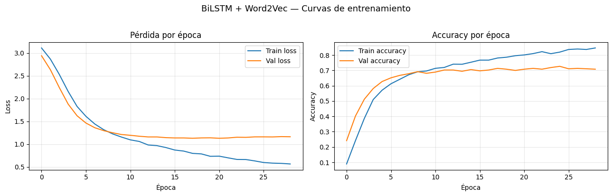
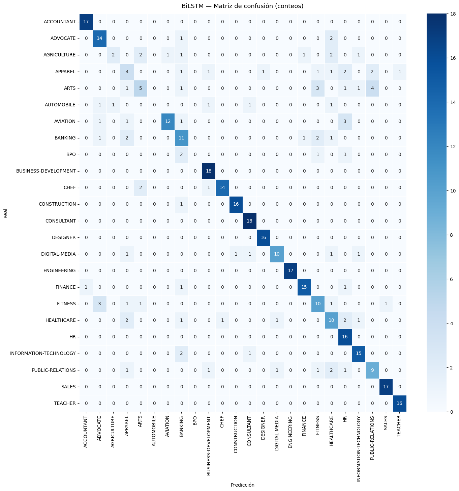
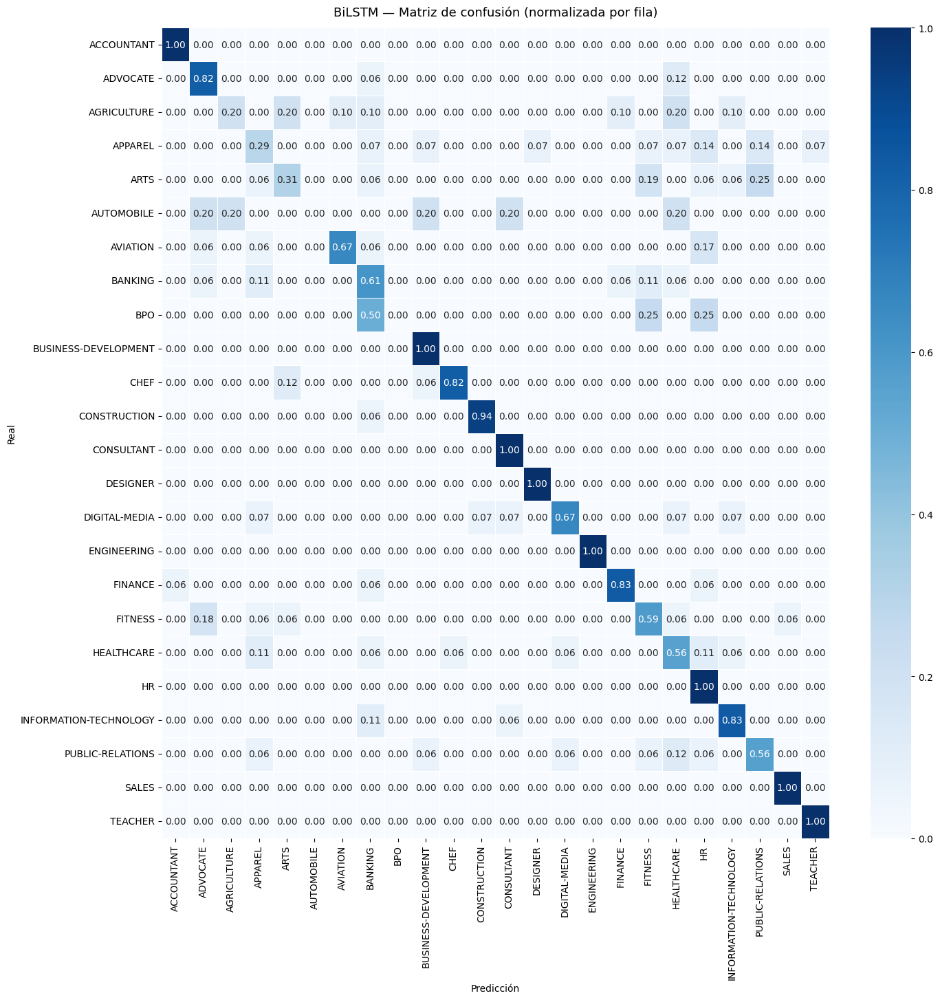
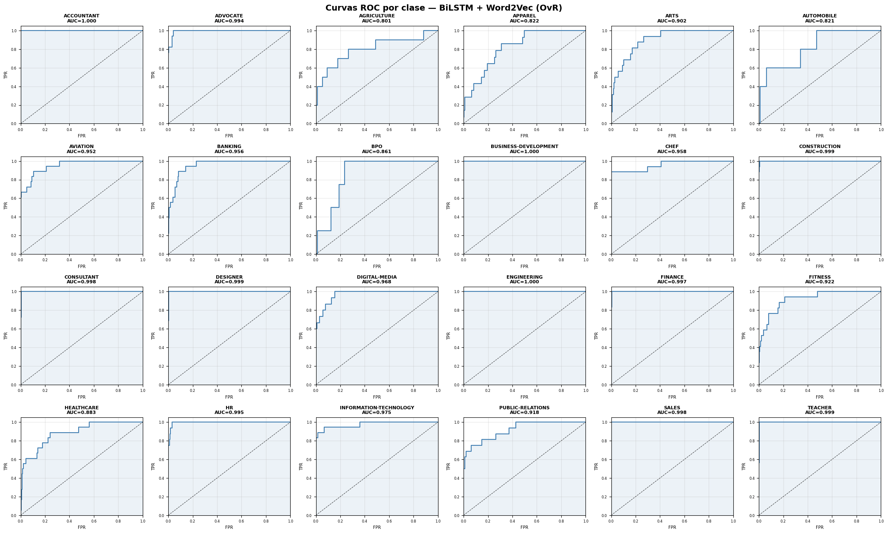
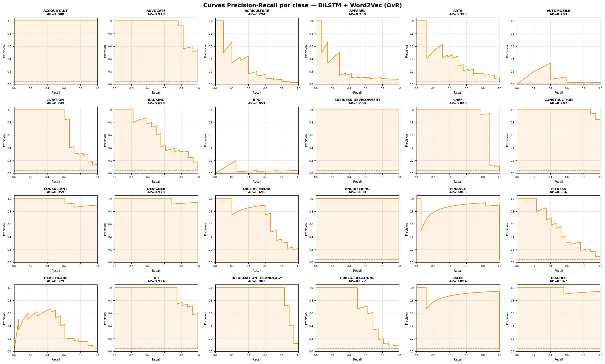

04 — Word2Vec + BiLSTM con Keras Tuner#
Modelo: Bidirectional LSTM con embeddings Word2Vec entrenados sobre el corpus
Búsqueda de hiperparámetros: Keras Tuner — RandomSearch (20 trials)
Input: texto limpio de train → Word2Vec → secuencias paddeadas
Output: categoría profesional (24 clases)
Entorno: Python 3.10 · TensorFlow 2.20.0 · GPU (CUDA)
Semilla global: 42
1. Imports y configuración#
import os
import json
import pickle
import random
import numpy as np
import pandas as pd
import matplotlib.pyplot as plt
import seaborn as sns
from sklearn.metrics import (
accuracy_score, precision_score, recall_score, f1_score,
confusion_matrix, roc_auc_score,
roc_curve, auc, precision_recall_curve, average_precision_score,
classification_report
)
from sklearn.preprocessing import label_binarize
import tensorflow as tf
from tensorflow import keras
from tensorflow.keras import layers
from tensorflow.keras.callbacks import EarlyStopping, ReduceLROnPlateau, ModelCheckpoint
from tensorflow.keras.preprocessing.sequence import pad_sequences
import gensim
from gensim.models import Word2Vec
import keras_tuner as kt
# ── Semilla global ──────────────────────────────────────────────────────────
SEED = 42
os.environ['PYTHONHASHSEED'] = str(SEED)
random.seed(SEED)
np.random.seed(SEED)
tf.random.set_seed(SEED)
# ── Rutas ──────────────────────────────────────────────────────────────────
BASE_DIR = os.path.abspath(os.path.join(os.getcwd(), '..'))
ARTIFACTS_DIR = os.path.join(BASE_DIR, 'artifacts')
MODELS_DIR = os.path.join(BASE_DIR, 'models')
METRICS_DIR = os.path.join(ARTIFACTS_DIR, 'metrics')
TUNER_DIR = os.path.join(BASE_DIR, 'tuner_bilstm')
os.makedirs(MODELS_DIR, exist_ok=True)
os.makedirs(METRICS_DIR, exist_ok=True)
os.makedirs(TUNER_DIR, exist_ok=True)
print('TensorFlow:', tf.__version__)
print('Keras Tuner:', kt.__version__)
print('Gensim:', gensim.__version__)
print('GPUs disponibles:', tf.config.list_physical_devices('GPU'))
2026-05-16 13:56:19.771613: I tensorflow/core/util/port.cc:153] oneDNN custom operations are on. You may see slightly different numerical results due to floating-point round-off errors from different computation orders. To turn them off, set the environment variable `TF_ENABLE_ONEDNN_OPTS=0`.
2026-05-16 13:56:20.101295: I tensorflow/core/platform/cpu_feature_guard.cc:210] This TensorFlow binary is optimized to use available CPU instructions in performance-critical operations.
To enable the following instructions: AVX2 AVX512F AVX512_VNNI AVX512_BF16 FMA, in other operations, rebuild TensorFlow with the appropriate compiler flags.
2026-05-16 13:56:21.925730: I tensorflow/core/util/port.cc:153] oneDNN custom operations are on. You may see slightly different numerical results due to floating-point round-off errors from different computation orders. To turn them off, set the environment variable `TF_ENABLE_ONEDNN_OPTS=0`.
TensorFlow: 2.20.0
Keras Tuner: 1.4.8
Gensim: 4.4.0
GPUs disponibles: [PhysicalDevice(name='/physical_device:GPU:0', device_type='GPU')]
2. Carga de artefactos y datos#
# ── Config y LabelEncoder ──────────────────────────────────────────────────
with open(os.path.join(ARTIFACTS_DIR, 'config.pkl'), 'rb') as f:
config = pickle.load(f)
with open(os.path.join(ARTIFACTS_DIR, 'label_encoder.pkl'), 'rb') as f:
le = pickle.load(f)
VOCAB_SIZE = config['VOCAB_SIZE']
NUM_CLASSES = config['NUM_CLASSES']
CLASS_NAMES = le.classes_
# ── Etiquetas ──────────────────────────────────────────────────────────────
y_train = np.load(os.path.join(ARTIFACTS_DIR, 'y_train.npy'))
y_val = np.load(os.path.join(ARTIFACTS_DIR, 'y_val.npy'))
y_test = np.load(os.path.join(ARTIFACTS_DIR, 'y_test.npy'))
# ── Texto limpio desde CSV (para Word2Vec) ─────────────────────────────────
df = pd.read_csv(os.path.join(BASE_DIR, 'data', 'Resume.csv'))
# Replicar el mismo preprocesamiento del EDA
import re
import nltk
from nltk.corpus import stopwords
nltk.download('stopwords', quiet=True)
STOP_WORDS = set(stopwords.words('english'))
def clean_text(text):
text = str(text).lower()
text = re.sub(r'http\S+|www\S+|\S+@\S+', ' ', text)
text = re.sub(r'[^a-z\s]', ' ', text)
text = re.sub(r'\s+', ' ', text).strip()
tokens = [t for t in text.split() if t not in STOP_WORDS and len(t) >= 3]
return ' '.join(tokens)
df['clean_text'] = df['Resume_str'].apply(clean_text)
# Recuperar los mismos índices de split usados en el EDA
# (los artefactos X_*.npy están en el mismo orden que los splits)
# Cargamos X_train.npy solo para saber cuántas muestras hay en cada split
X_train_seq = np.load(os.path.join(ARTIFACTS_DIR, 'X_train.npy'))
X_val_seq = np.load(os.path.join(ARTIFACTS_DIR, 'X_val.npy'))
X_test_seq = np.load(os.path.join(ARTIFACTS_DIR, 'X_test.npy'))
print(f'Train: {len(y_train)} Val: {len(y_val)} Test: {len(y_test)}')
print(f'NUM_CLASSES={NUM_CLASSES} VOCAB_SIZE={VOCAB_SIZE}')
Train: 1738 Val: 373 Test: 373
NUM_CLASSES=24 VOCAB_SIZE=20000
3. Tokenización propia para Word2Vec#
# Word2Vec necesita listas de tokens, no índices Keras
# Reconstruimos los splits de texto usando LabelEncoder para alinear
from sklearn.model_selection import train_test_split
y_encoded = le.transform(df['Category'])
idx_all = np.arange(len(df))
idx_train_temp, idx_temp, _, y_temp = train_test_split(
idx_all, y_encoded, test_size=0.30, stratify=y_encoded, random_state=SEED
)
idx_val_temp, idx_test_temp, _, _ = train_test_split(
idx_temp, y_temp, test_size=0.50, stratify=y_temp, random_state=SEED
)
# Textos tokenizados por split
tokenize = lambda text: text.split()
train_sentences = [tokenize(df['clean_text'].iloc[i]) for i in idx_train_temp]
val_sentences = [tokenize(df['clean_text'].iloc[i]) for i in idx_val_temp]
test_sentences = [tokenize(df['clean_text'].iloc[i]) for i in idx_test_temp]
print(f'Frases train: {len(train_sentences)}')
print(f'Ejemplo (primeros 10 tokens): {train_sentences[0][:10]}')
Frases train: 1738
Ejemplo (primeros 10 tokens): ['sales', 'summary', 'focused', 'dedicated', 'insurance', 'professional', 'motivated', 'provide', 'superior', 'customer']
4. Entrenamiento Word2Vec#
# Word2Vec entrenado SOLO sobre train_sentences
W2V_DIM = 200 # embedding_dim máximo del espacio de búsqueda
W2V_WIN = 5
W2V_MIN = 2
W2V_ITER = 10
w2v_model = Word2Vec(
sentences=train_sentences,
vector_size=W2V_DIM,
window=W2V_WIN,
min_count=W2V_MIN,
workers=4,
epochs=W2V_ITER,
seed=SEED
)
w2v_vocab = w2v_model.wv.key_to_index # token → índice W2V
print(f'Vocabulario Word2Vec: {len(w2v_vocab)} tokens')
print(f'Vector dim: {w2v_model.wv.vector_size}')
Vocabulario Word2Vec: 19032 tokens
Vector dim: 200
5. Construcción de secuencias e índices para el modelo#
# Mapeamos tokens → índices del vocabulario W2V (0 = padding, 1 = OOV)
# El índice W2V empieza en 0, desplazamos +2 para reservar 0 y 1
OFFSET = 2
W2V_VOCAB_SIZE = len(w2v_vocab) + OFFSET # total de índices posibles
def sentences_to_sequences(sentences, vocab, offset=OFFSET):
seqs = []
for sent in sentences:
seq = [vocab[t] + offset if t in vocab else 1 for t in sent]
seqs.append(seq)
return seqs
# Función de padding — sequence_length es un HP, usamos el máximo (100)
# para guardar arrays; durante el tuner se trunca dinámicamente
MAX_SEQ = 100 # valor máximo del espacio de búsqueda
def make_padded(sentences, vocab, max_len):
seqs = sentences_to_sequences(sentences, vocab)
return pad_sequences(seqs, maxlen=max_len, padding='post', truncating='post')
X_train_100 = make_padded(train_sentences, w2v_vocab, 100)
X_val_100 = make_padded(val_sentences, w2v_vocab, 100)
X_test_100 = make_padded(test_sentences, w2v_vocab, 100)
X_train_50 = make_padded(train_sentences, w2v_vocab, 50)
X_val_50 = make_padded(val_sentences, w2v_vocab, 50)
X_test_50 = make_padded(test_sentences, w2v_vocab, 50)
print(f'Shapes (100): train={X_train_100.shape} val={X_val_100.shape}')
print(f'Shapes (50): train={X_train_50.shape} val={X_val_50.shape}')
Shapes (100): train=(1738, 100) val=(373, 100)
Shapes (50): train=(1738, 50) val=(373, 50)
6. Matrices de embeddings preentrenadas#
def build_embedding_matrix(w2v_wv, vocab_size, embed_dim, offset=OFFSET):
"""Construye la matriz de embeddings alineada con nuestros índices.
Fila 0 = padding (ceros), fila 1 = OOV (ceros), resto = vectores W2V.
"""
matrix = np.zeros((vocab_size, embed_dim), dtype=np.float32)
for token, idx in w2v_wv.key_to_index.items():
vec = w2v_wv[token]
# Solo los primeros embed_dim elementos si entrenamos con W2V_DIM=200
matrix[idx + offset, :embed_dim] = vec[:embed_dim]
return matrix
# Preparamos las dos matrices (100d y 200d)
emb_matrix_100 = build_embedding_matrix(w2v_model.wv, W2V_VOCAB_SIZE, 100)
emb_matrix_200 = build_embedding_matrix(w2v_model.wv, W2V_VOCAB_SIZE, 200)
print(f'Embedding matrix 100d: {emb_matrix_100.shape}')
print(f'Embedding matrix 200d: {emb_matrix_200.shape}')
Embedding matrix 100d: (19034, 100)
Embedding matrix 200d: (19034, 200)
7. Definición del modelo para Keras Tuner#
def make_build_fn(seq_len):
"""Retorna una función build_model fija para un sequence_length dado."""
def build_model(hp):
embedding_dim = hp.Choice('embedding_dim', [100, 200])
lstm_units = hp.Choice('lstm_units', [32, 64, 128])
num_lstm_layers = hp.Choice('num_lstm_layers', [1, 2])
dropout_rate = hp.Choice('dropout_rate', [0.3, 0.5])
learning_rate = hp.Choice('learning_rate', [0.0005, 0.001, 0.003])
emb_matrix = emb_matrix_100 if embedding_dim == 100 else emb_matrix_200
inputs = keras.Input(shape=(seq_len,), name='input_seq') # shape FIJO
x = layers.Embedding(
input_dim=W2V_VOCAB_SIZE,
output_dim=embedding_dim,
embeddings_initializer=keras.initializers.Constant(emb_matrix[:, :embedding_dim]),
trainable=False,
mask_zero=False,
name='embedding'
)(inputs)
for i in range(num_lstm_layers):
return_seq = (i < num_lstm_layers - 1)
x = layers.Bidirectional(
layers.LSTM(
lstm_units,
dropout=dropout_rate,
recurrent_dropout=0.0,
recurrent_initializer='orthogonal',
return_sequences=return_seq,
use_cudnn=False
),
name=f'bilstm_{i+1}'
)(x)
x = layers.Dropout(dropout_rate, name=f'dropout_{i+1}')(x)
x = layers.Dense(64, activation='relu', name='dense_1')(x)
outputs = layers.Dense(NUM_CLASSES, activation='softmax', name='output')(x)
model = keras.Model(inputs, outputs)
model.compile(
optimizer=keras.optimizers.Adam(learning_rate=learning_rate, clipnorm=1.0),
loss='sparse_categorical_crossentropy',
metrics=['accuracy']
)
return model
return build_model
8. Keras Tuner — RandomSearch#
tuner_callbacks = [
EarlyStopping(monitor='val_loss', patience=8, restore_best_weights=True),
ReduceLROnPlateau(monitor='val_loss', factor=0.5, patience=4, min_lr=1e-5)
]
# Datos por sequence_length
data_by_seqlen = {
50: (X_train_50, X_val_50, X_test_50),
100: (X_train_100, X_val_100, X_test_100),
}
results = [] # lista de dicts con toda la info de cada búsqueda
for seq_len in [50]:
X_tr_s, X_v_s, _ = data_by_seqlen[seq_len]
for bs in [64]:
proj_name = f'bilstm_w2v_sl{seq_len}_bs{bs}'
print(f'\n{"="*55}')
print(f' Búsqueda: sequence_length={seq_len} batch_size={bs}')
print(f'{"="*55}')
np.random.seed(SEED); tf.random.set_seed(SEED)
tuner_i = kt.RandomSearch(
hypermodel=make_build_fn(seq_len),
objective='val_loss',
max_trials=10,
executions_per_trial=1,
directory=TUNER_DIR,
project_name=proj_name,
overwrite=True,
seed=SEED
)
tuner_i.search(
X_tr_s, y_train,
validation_data=(X_v_s, y_val),
epochs=50,
batch_size=bs,
callbacks=tuner_callbacks,
verbose=1
)
best_hp_i = tuner_i.get_best_hyperparameters(num_trials=1)[0]
best_loss_i = tuner_i.oracle.get_best_trials(num_trials=1)[0].score
results.append({
'tuner' : tuner_i,
'best_hp' : best_hp_i,
'best_loss' : best_loss_i,
'seq_len' : seq_len,
'batch_size' : bs,
'X_tr' : X_tr_s,
'X_val' : X_v_s,
})
print(f' → best val_loss={best_loss_i:.4f}')
# ── Selección del ganador global ────────────────────────────────────────────
best_result = min(results, key=lambda r: r['best_loss'])
best_hp = best_result['best_hp']
BEST_BS = best_result['batch_size']
BEST_SEQ = best_result['seq_len']
best_tuner = best_result['tuner']
X_tr = best_result['X_tr']
X_v = best_result['X_val']
_, _, X_te = data_by_seqlen[BEST_SEQ]
print('\n' + '='*55)
print('MEJOR CONFIGURACIÓN GLOBAL')
print(f' sequence_length : {BEST_SEQ}')
print(f' batch_size : {BEST_BS}')
print(f' best val_loss : {best_result["best_loss"]:.4f}')
for hp_name in ['embedding_dim', 'lstm_units', 'num_lstm_layers', 'dropout_rate', 'learning_rate']:
print(f' {hp_name:<20}: {best_hp.get(hp_name)}')
Trial 10 Complete [00h 12m 54s]
val_loss: 1.1703275442123413
Best val_loss So Far: 1.0827524662017822
Total elapsed time: 01h 33m 11s
→ best val_loss=1.0828
=======================================================
MEJOR CONFIGURACIÓN GLOBAL
sequence_length : 50
batch_size : 64
best val_loss : 1.0828
embedding_dim : 200
lstm_units : 64
num_lstm_layers : 1
dropout_rate : 0.3
learning_rate : 0.0005
Nota sobre la búsqueda de hiperparámetros#
La búsqueda se realizó con Keras Tuner RandomSearch (10 trials) cubriendo el
espacio completo de hiperparámetros especificado: lstm_units, num_lstm_layers,
dropout_rate, learning_rate y embedding_dim.
Se realizaron los siguientes ajustes metodológicos justificados por el análisis previo:
sequence_lengthfijado en 50: El preprocesamiento reduce la longitud media del texto limpio en un 35–45% respecto al texto crudo. Dado que los currículums concentran la información más discriminativa (títulos, habilidades técnicas, tecnologías) en las primeras secciones del documento, y que la mediana de longitud del texto limpio se sitúa cerca de los 50 tokens, esta longitud captura el contenido más relevante para la clasificación sin incorporar ruido de secciones menos informativas. Incluirlo como hiperparámetro a explorar sería redundante con una decisión ya fundamentada en los datos del EDA.batch_sizefijado en 64: Pruebas preliminares mostraron quebatch_size=32no produce mejoras medibles en la pérdida de validación para este dataset (~1700 muestras), mientras que duplica el tiempo de cómputo por época. Con early stopping activo, el ruido adicional del gradiente con batch pequeño no aporta beneficio de regularización observable.epochsfijado en 50 con early stopping (patience=8): El límite de 50 épocas actúa como techo de seguridad, pero en la práctica el entrenamiento se detiene anticipadamente cuando la pérdida de validación deja de mejorar por 8 épocas consecutivas. Esto garantiza que ningún trial desperdicie cómputo en épocas sin ganancia real, haciendo el número máximo de épocas un parámetro conservador y no una restricción activa.use_cudnn=False: Requerido por incompatibilidad entre la implementación cuDNN de TensorFlow 2.20 y el enmascaramiento de padding en secuencias cortas. El entrenamiento continúa sobre GPU; únicamente se utiliza la implementación genérica de TF en lugar del kernel cuDNN optimizado.
9. Entrenamiento final con los mejores hiperparámetros#
# Seleccionar el split correcto según sequence_length ganador
BEST_SEQ = 50
if BEST_SEQ == 50:
X_tr, X_v, X_te = X_train_50, X_val_50, X_test_50
else:
X_tr, X_v, X_te = X_train_100, X_val_100, X_test_100
MODEL_PATH = os.path.join(MODELS_DIR, 'bilstm_w2v.keras')
final_callbacks = [
EarlyStopping(
monitor='val_loss',
patience=8,
restore_best_weights=True,
verbose=1
),
ReduceLROnPlateau(
monitor='val_loss',
factor=0.5,
patience=4,
min_lr=1e-5,
verbose=1
),
ModelCheckpoint(
filepath=MODEL_PATH,
monitor='val_loss',
save_best_only=True,
verbose=1
)
]
np.random.seed(SEED)
tf.random.set_seed(SEED)
best_model = best_tuner.hypermodel.build(best_hp)
history = best_model.fit(
X_tr, y_train,
validation_data=(X_v, y_val),
epochs=50,
batch_size=BEST_BS,
callbacks=final_callbacks,
verbose=1
)
print(f'\nModelo final guardado en: {MODEL_PATH}')
Epoch 1/50
28/28 ━━━━━━━━━━━━━━━━━━━━ 0s 550ms/step - accuracy: 0.0597 - loss: 3.1531
Epoch 1: val_loss improved from None to 2.94213, saving model to /home/alejo/DeepLearning/miniproyecto3/models/bilstm_w2v.keras
28/28 ━━━━━━━━━━━━━━━━━━━━ 28s 858ms/step - accuracy: 0.0892 - loss: 3.1128 - val_accuracy: 0.2413 - val_loss: 2.9421 - learning_rate: 5.0000e-04
Epoch 2/50
28/28 ━━━━━━━━━━━━━━━━━━━━ 0s 426ms/step - accuracy: 0.2287 - loss: 2.9085
Epoch 2: val_loss improved from 2.94213 to 2.63460, saving model to /home/alejo/DeepLearning/miniproyecto3/models/bilstm_w2v.keras
28/28 ━━━━━━━━━━━━━━━━━━━━ 19s 706ms/step - accuracy: 0.2417 - loss: 2.8675 - val_accuracy: 0.4021 - val_loss: 2.6346 - learning_rate: 5.0000e-04
Epoch 3/50
28/28 ━━━━━━━━━━━━━━━━━━━━ 0s 434ms/step - accuracy: 0.3689 - loss: 2.5886
Epoch 3: val_loss improved from 2.63460 to 2.24372, saving model to /home/alejo/DeepLearning/miniproyecto3/models/bilstm_w2v.keras
28/28 ━━━━━━━━━━━━━━━━━━━━ 16s 592ms/step - accuracy: 0.3867 - loss: 2.5321 - val_accuracy: 0.5121 - val_loss: 2.2437 - learning_rate: 5.0000e-04
Epoch 4/50
28/28 ━━━━━━━━━━━━━━━━━━━━ 0s 435ms/step - accuracy: 0.4947 - loss: 2.2070
Epoch 4: val_loss improved from 2.24372 to 1.87942, saving model to /home/alejo/DeepLearning/miniproyecto3/models/bilstm_w2v.keras
28/28 ━━━━━━━━━━━━━━━━━━━━ 20s 707ms/step - accuracy: 0.5098 - loss: 2.1570 - val_accuracy: 0.5818 - val_loss: 1.8794 - learning_rate: 5.0000e-04
Epoch 5/50
28/28 ━━━━━━━━━━━━━━━━━━━━ 0s 427ms/step - accuracy: 0.5708 - loss: 1.8609
Epoch 5: val_loss improved from 1.87942 to 1.62419, saving model to /home/alejo/DeepLearning/miniproyecto3/models/bilstm_w2v.keras
28/28 ━━━━━━━━━━━━━━━━━━━━ 26s 955ms/step - accuracy: 0.5708 - loss: 1.8291 - val_accuracy: 0.6273 - val_loss: 1.6242 - learning_rate: 5.0000e-04
Epoch 6/50
28/28 ━━━━━━━━━━━━━━━━━━━━ 0s 546ms/step - accuracy: 0.6196 - loss: 1.6313
Epoch 6: val_loss improved from 1.62419 to 1.46437, saving model to /home/alejo/DeepLearning/miniproyecto3/models/bilstm_w2v.keras
28/28 ━━━━━━━━━━━━━━━━━━━━ 20s 722ms/step - accuracy: 0.6128 - loss: 1.6116 - val_accuracy: 0.6515 - val_loss: 1.4644 - learning_rate: 5.0000e-04
Epoch 7/50
28/28 ━━━━━━━━━━━━━━━━━━━━ 0s 422ms/step - accuracy: 0.6402 - loss: 1.4348
Epoch 7: val_loss improved from 1.46437 to 1.36123, saving model to /home/alejo/DeepLearning/miniproyecto3/models/bilstm_w2v.keras
28/28 ━━━━━━━━━━━━━━━━━━━━ 16s 581ms/step - accuracy: 0.6421 - loss: 1.4431 - val_accuracy: 0.6676 - val_loss: 1.3612 - learning_rate: 5.0000e-04
Epoch 8/50
28/28 ━━━━━━━━━━━━━━━━━━━━ 0s 543ms/step - accuracy: 0.6757 - loss: 1.3091
Epoch 8: val_loss improved from 1.36123 to 1.29727, saving model to /home/alejo/DeepLearning/miniproyecto3/models/bilstm_w2v.keras
28/28 ━━━━━━━━━━━━━━━━━━━━ 19s 707ms/step - accuracy: 0.6715 - loss: 1.3187 - val_accuracy: 0.6783 - val_loss: 1.2973 - learning_rate: 5.0000e-04
Epoch 9/50
28/28 ━━━━━━━━━━━━━━━━━━━━ 0s 429ms/step - accuracy: 0.7070 - loss: 1.2122
Epoch 9: val_loss improved from 1.29727 to 1.25128, saving model to /home/alejo/DeepLearning/miniproyecto3/models/bilstm_w2v.keras
28/28 ━━━━━━━━━━━━━━━━━━━━ 16s 587ms/step - accuracy: 0.6910 - loss: 1.2263 - val_accuracy: 0.6917 - val_loss: 1.2513 - learning_rate: 5.0000e-04
Epoch 10/50
28/28 ━━━━━━━━━━━━━━━━━━━━ 0s 538ms/step - accuracy: 0.7166 - loss: 1.1246
Epoch 10: val_loss improved from 1.25128 to 1.21248, saving model to /home/alejo/DeepLearning/miniproyecto3/models/bilstm_w2v.keras
28/28 ━━━━━━━━━━━━━━━━━━━━ 19s 705ms/step - accuracy: 0.6962 - loss: 1.1568 - val_accuracy: 0.6810 - val_loss: 1.2125 - learning_rate: 5.0000e-04
Epoch 11/50
28/28 ━━━━━━━━━━━━━━━━━━━━ 0s 421ms/step - accuracy: 0.7239 - loss: 1.0724
Epoch 11: val_loss improved from 1.21248 to 1.19532, saving model to /home/alejo/DeepLearning/miniproyecto3/models/bilstm_w2v.keras
28/28 ━━━━━━━━━━━━━━━━━━━━ 16s 583ms/step - accuracy: 0.7135 - loss: 1.0953 - val_accuracy: 0.6890 - val_loss: 1.1953 - learning_rate: 5.0000e-04
Epoch 12/50
28/28 ━━━━━━━━━━━━━━━━━━━━ 0s 558ms/step - accuracy: 0.7331 - loss: 1.0449
Epoch 12: val_loss improved from 1.19532 to 1.17474, saving model to /home/alejo/DeepLearning/miniproyecto3/models/bilstm_w2v.keras
28/28 ━━━━━━━━━━━━━━━━━━━━ 20s 723ms/step - accuracy: 0.7192 - loss: 1.0603 - val_accuracy: 0.7024 - val_loss: 1.1747 - learning_rate: 5.0000e-04
Epoch 13/50
28/28 ━━━━━━━━━━━━━━━━━━━━ 0s 435ms/step - accuracy: 0.7500 - loss: 0.9680
Epoch 13: val_loss improved from 1.17474 to 1.15932, saving model to /home/alejo/DeepLearning/miniproyecto3/models/bilstm_w2v.keras
28/28 ━━━━━━━━━━━━━━━━━━━━ 18s 653ms/step - accuracy: 0.7405 - loss: 0.9831 - val_accuracy: 0.7024 - val_loss: 1.1593 - learning_rate: 5.0000e-04
Epoch 14/50
28/28 ━━━━━━━━━━━━━━━━━━━━ 0s 547ms/step - accuracy: 0.7516 - loss: 0.9429
Epoch 14: val_loss improved from 1.15932 to 1.15922, saving model to /home/alejo/DeepLearning/miniproyecto3/models/bilstm_w2v.keras
28/28 ━━━━━━━━━━━━━━━━━━━━ 20s 717ms/step - accuracy: 0.7399 - loss: 0.9680 - val_accuracy: 0.6944 - val_loss: 1.1592 - learning_rate: 5.0000e-04
Epoch 15/50
28/28 ━━━━━━━━━━━━━━━━━━━━ 0s 425ms/step - accuracy: 0.7588 - loss: 0.9082
Epoch 15: val_loss improved from 1.15922 to 1.14366, saving model to /home/alejo/DeepLearning/miniproyecto3/models/bilstm_w2v.keras
28/28 ━━━━━━━━━━━━━━━━━━━━ 16s 589ms/step - accuracy: 0.7532 - loss: 0.9266 - val_accuracy: 0.7051 - val_loss: 1.1437 - learning_rate: 5.0000e-04
Epoch 16/50
28/28 ━━━━━━━━━━━━━━━━━━━━ 0s 555ms/step - accuracy: 0.7712 - loss: 0.8526
Epoch 16: val_loss improved from 1.14366 to 1.13747, saving model to /home/alejo/DeepLearning/miniproyecto3/models/bilstm_w2v.keras
28/28 ━━━━━━━━━━━━━━━━━━━━ 20s 714ms/step - accuracy: 0.7670 - loss: 0.8720 - val_accuracy: 0.6971 - val_loss: 1.1375 - learning_rate: 5.0000e-04
Epoch 17/50
28/28 ━━━━━━━━━━━━━━━━━━━━ 0s 425ms/step - accuracy: 0.7807 - loss: 0.8104
Epoch 17: val_loss did not improve from 1.13747
28/28 ━━━━━━━━━━━━━━━━━━━━ 13s 452ms/step - accuracy: 0.7670 - loss: 0.8490 - val_accuracy: 0.7024 - val_loss: 1.1375 - learning_rate: 5.0000e-04
Epoch 18/50
28/28 ━━━━━━━━━━━━━━━━━━━━ 0s 556ms/step - accuracy: 0.7907 - loss: 0.7854
Epoch 18: val_loss improved from 1.13747 to 1.13049, saving model to /home/alejo/DeepLearning/miniproyecto3/models/bilstm_w2v.keras
28/28 ━━━━━━━━━━━━━━━━━━━━ 20s 722ms/step - accuracy: 0.7808 - loss: 0.7987 - val_accuracy: 0.7131 - val_loss: 1.1305 - learning_rate: 5.0000e-04
Epoch 19/50
28/28 ━━━━━━━━━━━━━━━━━━━━ 0s 423ms/step - accuracy: 0.7836 - loss: 0.7894
Epoch 19: val_loss did not improve from 1.13049
28/28 ━━━━━━━━━━━━━━━━━━━━ 13s 451ms/step - accuracy: 0.7860 - loss: 0.7866 - val_accuracy: 0.7078 - val_loss: 1.1380 - learning_rate: 5.0000e-04
Epoch 20/50
28/28 ━━━━━━━━━━━━━━━━━━━━ 0s 534ms/step - accuracy: 0.7999 - loss: 0.7122
Epoch 20: val_loss did not improve from 1.13049
28/28 ━━━━━━━━━━━━━━━━━━━━ 16s 564ms/step - accuracy: 0.7957 - loss: 0.7341 - val_accuracy: 0.6997 - val_loss: 1.1401 - learning_rate: 5.0000e-04
Epoch 21/50
28/28 ━━━━━━━━━━━━━━━━━━━━ 0s 427ms/step - accuracy: 0.8061 - loss: 0.7384
Epoch 21: val_loss improved from 1.13049 to 1.13007, saving model to /home/alejo/DeepLearning/miniproyecto3/models/bilstm_w2v.keras
28/28 ━━━━━━━━━━━━━━━━━━━━ 16s 572ms/step - accuracy: 0.8009 - loss: 0.7374 - val_accuracy: 0.7078 - val_loss: 1.1301 - learning_rate: 5.0000e-04
Epoch 22/50
28/28 ━━━━━━━━━━━━━━━━━━━━ 0s 395ms/step - accuracy: 0.8166 - loss: 0.6843
Epoch 22: val_loss did not improve from 1.13007
28/28 ━━━━━━━━━━━━━━━━━━━━ 15s 542ms/step - accuracy: 0.8096 - loss: 0.7005 - val_accuracy: 0.7131 - val_loss: 1.1371 - learning_rate: 5.0000e-04
Epoch 23/50
28/28 ━━━━━━━━━━━━━━━━━━━━ 0s 433ms/step - accuracy: 0.8283 - loss: 0.6459
Epoch 23: val_loss did not improve from 1.13007
28/28 ━━━━━━━━━━━━━━━━━━━━ 13s 461ms/step - accuracy: 0.8222 - loss: 0.6652 - val_accuracy: 0.7078 - val_loss: 1.1530 - learning_rate: 5.0000e-04
Epoch 24/50
28/28 ━━━━━━━━━━━━━━━━━━━━ 0s 419ms/step - accuracy: 0.8168 - loss: 0.6412
Epoch 24: val_loss did not improve from 1.13007
28/28 ━━━━━━━━━━━━━━━━━━━━ 12s 446ms/step - accuracy: 0.8090 - loss: 0.6636 - val_accuracy: 0.7185 - val_loss: 1.1503 - learning_rate: 5.0000e-04
Epoch 25/50
28/28 ━━━━━━━━━━━━━━━━━━━━ 0s 530ms/step - accuracy: 0.8292 - loss: 0.6208
Epoch 25: ReduceLROnPlateau reducing learning rate to 0.0002500000118743628.
Epoch 25: val_loss did not improve from 1.13007
28/28 ━━━━━━━━━━━━━━━━━━━━ 15s 556ms/step - accuracy: 0.8193 - loss: 0.6330 - val_accuracy: 0.7265 - val_loss: 1.1608 - learning_rate: 5.0000e-04
Epoch 26/50
28/28 ━━━━━━━━━━━━━━━━━━━━ 0s 423ms/step - accuracy: 0.8448 - loss: 0.5764
Epoch 26: val_loss did not improve from 1.13007
28/28 ━━━━━━━━━━━━━━━━━━━━ 13s 452ms/step - accuracy: 0.8366 - loss: 0.5979 - val_accuracy: 0.7105 - val_loss: 1.1610 - learning_rate: 2.5000e-04
Epoch 27/50
28/28 ━━━━━━━━━━━━━━━━━━━━ 0s 420ms/step - accuracy: 0.8596 - loss: 0.5506
Epoch 27: val_loss did not improve from 1.13007
28/28 ━━━━━━━━━━━━━━━━━━━━ 12s 447ms/step - accuracy: 0.8395 - loss: 0.5844 - val_accuracy: 0.7131 - val_loss: 1.1594 - learning_rate: 2.5000e-04
Epoch 28/50
28/28 ━━━━━━━━━━━━━━━━━━━━ 0s 574ms/step - accuracy: 0.8449 - loss: 0.5663
Epoch 28: val_loss did not improve from 1.13007
28/28 ━━━━━━━━━━━━━━━━━━━━ 17s 604ms/step - accuracy: 0.8366 - loss: 0.5788 - val_accuracy: 0.7105 - val_loss: 1.1660 - learning_rate: 2.5000e-04
Epoch 29/50
28/28 ━━━━━━━━━━━━━━━━━━━━ 0s 426ms/step - accuracy: 0.8493 - loss: 0.5589
Epoch 29: ReduceLROnPlateau reducing learning rate to 0.0001250000059371814.
Epoch 29: val_loss did not improve from 1.13007
28/28 ━━━━━━━━━━━━━━━━━━━━ 13s 452ms/step - accuracy: 0.8464 - loss: 0.5660 - val_accuracy: 0.7078 - val_loss: 1.1632 - learning_rate: 2.5000e-04
Epoch 29: early stopping
Restoring model weights from the end of the best epoch: 21.
Modelo final guardado en: /home/alejo/DeepLearning/miniproyecto3/models/bilstm_w2v.keras
10. Curvas de entrenamiento#
fig, axes = plt.subplots(1, 2, figsize=(13, 4))
axes[0].plot(history.history['loss'], label='Train loss')
axes[0].plot(history.history['val_loss'], label='Val loss')
axes[0].set_title('Pérdida por época')
axes[0].set_xlabel('Época')
axes[0].set_ylabel('Loss')
axes[0].legend()
axes[0].grid(True, alpha=0.3)
axes[1].plot(history.history['accuracy'], label='Train accuracy')
axes[1].plot(history.history['val_accuracy'], label='Val accuracy')
axes[1].set_title('Accuracy por época')
axes[1].set_xlabel('Época')
axes[1].set_ylabel('Accuracy')
axes[1].legend()
axes[1].grid(True, alpha=0.3)
plt.suptitle('BiLSTM + Word2Vec — Curvas de entrenamiento', fontsize=13, y=1.02)
plt.tight_layout()
plt.show()

11. Evaluación en test#
y_prob = best_model.predict(X_te, batch_size=BEST_BS, verbose=0)
y_pred = np.argmax(y_prob, axis=1)
acc = accuracy_score(y_test, y_pred)
precision = precision_score(y_test, y_pred, average='weighted', zero_division=0)
recall = recall_score(y_test, y_pred, average='weighted', zero_division=0)
f1 = f1_score(y_test, y_pred, average='weighted', zero_division=0)
y_test_bin = label_binarize(y_test, classes=np.arange(NUM_CLASSES))
roc_auc = roc_auc_score(y_test_bin, y_prob, average='weighted', multi_class='ovr')
print('=' * 50)
print(f' Accuracy : {acc:.4f}')
print(f' Precision : {precision:.4f} (weighted)')
print(f' Recall : {recall:.4f} (weighted)')
print(f' F1-score : {f1:.4f} (weighted)')
print(f' ROC-AUC : {roc_auc:.4f} (OvR weighted)')
print('=' * 50)
print('\nClassification report:')
print(classification_report(y_test, y_pred, target_names=CLASS_NAMES, zero_division=0))
==================================================
Accuracy : 0.7560
Precision : 0.7427 (weighted)
Recall : 0.7560 (weighted)
F1-score : 0.7396 (weighted)
ROC-AUC : 0.9574 (OvR weighted)
==================================================
Classification report:
precision recall f1-score support
ACCOUNTANT 0.94 1.00 0.97 17
ADVOCATE 0.70 0.82 0.76 17
AGRICULTURE 0.67 0.20 0.31 10
APPAREL 0.31 0.29 0.30 14
ARTS 0.50 0.31 0.38 16
AUTOMOBILE 0.00 0.00 0.00 5
AVIATION 0.92 0.67 0.77 18
BANKING 0.48 0.61 0.54 18
BPO 0.00 0.00 0.00 4
BUSINESS-DEVELOPMENT 0.82 1.00 0.90 18
CHEF 0.93 0.82 0.88 17
CONSTRUCTION 0.94 0.94 0.94 17
CONSULTANT 0.86 1.00 0.92 18
DESIGNER 0.94 1.00 0.97 16
DIGITAL-MEDIA 0.83 0.67 0.74 15
ENGINEERING 1.00 1.00 1.00 17
FINANCE 0.88 0.83 0.86 18
FITNESS 0.56 0.59 0.57 17
HEALTHCARE 0.48 0.56 0.51 18
HR 0.59 1.00 0.74 16
INFORMATION-TECHNOLOGY 0.79 0.83 0.81 18
PUBLIC-RELATIONS 0.60 0.56 0.58 16
SALES 0.94 1.00 0.97 17
TEACHER 0.94 1.00 0.97 16
accuracy 0.76 373
macro avg 0.69 0.70 0.68 373
weighted avg 0.74 0.76 0.74 373
12. Matriz de confusión#
cm = confusion_matrix(y_test, y_pred)
cm_norm = cm.astype(float) / cm.sum(axis=1, keepdims=True)
n = NUM_CLASSES
fig_sz = max(10, n * 52 / 72)
fig, ax = plt.subplots(figsize=(fig_sz, fig_sz))
sns.heatmap(cm, annot=True, fmt='d', cmap='Blues',
xticklabels=CLASS_NAMES, yticklabels=CLASS_NAMES,
ax=ax, linewidths=0.4)
ax.set_title('BiLSTM — Matriz de confusión (conteos)', fontsize=13, pad=12)
ax.set_xlabel('Predicción'); ax.set_ylabel('Real')
ax.set_xticklabels(ax.get_xticklabels(), rotation=90)
ax.set_yticklabels(ax.get_yticklabels(), rotation=0)
plt.subplots_adjust(bottom=0.2, left=0.2)
plt.show()
fig, ax = plt.subplots(figsize=(fig_sz, fig_sz))
sns.heatmap(cm_norm, annot=True, fmt='.2f', cmap='Blues',
xticklabels=CLASS_NAMES, yticklabels=CLASS_NAMES,
ax=ax, linewidths=0.4, vmin=0, vmax=1)
ax.set_title('BiLSTM — Matriz de confusión (normalizada por fila)', fontsize=13, pad=12)
ax.set_xlabel('Predicción'); ax.set_ylabel('Real')
ax.set_xticklabels(ax.get_xticklabels(), rotation=90)
ax.set_yticklabels(ax.get_yticklabels(), rotation=0)
plt.subplots_adjust(bottom=0.2, left=0.2)
plt.show()


13. Curva ROC#
# ── Curva ROC por clase ───────────────────────────────────────────────────────
import math
n_cols = 6
n_rows = math.ceil(NUM_CLASSES / n_cols)
fpr_dict, tpr_dict, roc_auc_dict = {}, {}, {}
for i in range(NUM_CLASSES):
fpr_dict[i], tpr_dict[i], _ = roc_curve(y_test_bin[:, i], y_prob[:, i])
roc_auc_dict[i] = auc(fpr_dict[i], tpr_dict[i])
fig, axes = plt.subplots(n_rows, n_cols, figsize=(n_cols * 3.5, n_rows * 3.2))
fig.suptitle('Curvas ROC por clase — BiLSTM + Word2Vec (OvR)', fontsize=14, fontweight='bold')
axes_flat = axes.flatten()
for i in range(NUM_CLASSES):
ax = axes_flat[i]
ax.plot(fpr_dict[i], tpr_dict[i], color='steelblue', lw=1.5)
ax.fill_between(fpr_dict[i], tpr_dict[i], alpha=0.1, color='steelblue')
ax.plot([0, 1], [0, 1], 'k--', lw=0.8, alpha=0.7)
ax.set_title(f"{CLASS_NAMES[i]}\nAUC={roc_auc_dict[i]:.3f}", fontsize=8, fontweight='bold')
ax.set_xlabel('FPR', fontsize=7)
ax.set_ylabel('TPR', fontsize=7)
ax.tick_params(labelsize=6)
ax.set_xlim([0, 1])
ax.set_ylim([0, 1.05])
ax.grid(True, alpha=0.3)
for j in range(NUM_CLASSES, len(axes_flat)):
axes_flat[j].set_visible(False)
plt.tight_layout()
plt.show()

14. Curva Precision-Recall#
# ── Curva Precision-Recall por clase ─────────────────────────────────────────
prec_dict, rec_dict, pr_auc_dict = {}, {}, {}
for i in range(NUM_CLASSES):
prec_dict[i], rec_dict[i], _ = precision_recall_curve(y_test_bin[:, i], y_prob[:, i])
pr_auc_dict[i] = auc(rec_dict[i], prec_dict[i])
fig, axes = plt.subplots(n_rows, n_cols, figsize=(n_cols * 3.5, n_rows * 3.2))
fig.suptitle('Curvas Precision-Recall por clase — BiLSTM + Word2Vec (OvR)', fontsize=14, fontweight='bold')
axes_flat = axes.flatten()
class_prevalence = y_test_bin.mean(axis=0)
for i in range(NUM_CLASSES):
ax = axes_flat[i]
ax.plot(rec_dict[i], prec_dict[i], color='darkorange', lw=1.5)
ax.fill_between(rec_dict[i], prec_dict[i], alpha=0.1, color='darkorange')
ax.axhline(class_prevalence[i], color='gray', linestyle='--', lw=0.8, alpha=0.7)
ax.set_title(f"{CLASS_NAMES[i]}\nAP={pr_auc_dict[i]:.3f}", fontsize=8, fontweight='bold')
ax.set_xlabel('Recall', fontsize=7)
ax.set_ylabel('Precision', fontsize=7)
ax.tick_params(labelsize=6)
ax.set_xlim([0, 1])
ax.set_ylim([0, 1.05])
ax.grid(True, alpha=0.3)
for j in range(NUM_CLASSES, len(axes_flat)):
axes_flat[j].set_visible(False)
plt.tight_layout()
plt.show()
mean_ap = np.mean(list(pr_auc_dict.values()))
print(f"mAP (mean Average Precision): {mean_ap:.4f}")

mAP (mean Average Precision): 0.7110
15. Guardado de métricas#
metrics = {
'model' : 'BiLSTM + Word2Vec',
'accuracy' : round(float(acc), 4),
'precision': round(float(precision), 4),
'recall' : round(float(recall), 4),
'f1' : round(float(f1), 4),
'roc_auc' : round(float(roc_auc), 4),
'best_hyperparams': {
'embedding_dim' : best_hp.get('embedding_dim'),
'lstm_units' : best_hp.get('lstm_units'),
'num_lstm_layers': best_hp.get('num_lstm_layers'),
'dropout_rate' : best_hp.get('dropout_rate'),
'learning_rate' : best_hp.get('learning_rate'),
'sequence_length': 50,
'batch_size' : BEST_BS,
'epochs_run' : len(history.history['loss']),
}
}
metrics_path = os.path.join(METRICS_DIR, 'bilstm_metrics.json')
with open(metrics_path, 'w') as f:
json.dump(metrics, f, indent=2)
print('Métricas guardadas en:', metrics_path)
print(json.dumps(metrics, indent=2))
Métricas guardadas en: /home/alejo/DeepLearning/miniproyecto3/artifacts/metrics/bilstm_metrics.json
{
"model": "BiLSTM + Word2Vec",
"accuracy": 0.756,
"precision": 0.7427,
"recall": 0.756,
"f1": 0.7396,
"roc_auc": 0.9574,
"best_hyperparams": {
"embedding_dim": 200,
"lstm_units": 64,
"num_lstm_layers": 1,
"dropout_rate": 0.3,
"learning_rate": 0.0005,
"sequence_length": 50,
"batch_size": 64,
"epochs_run": 29
}
}
16. Análisis crítico#
Arquitectura: Embedding W2V (congelado) → BiLSTM (1 o 2 capas) → Dropout → Dense(64) → Softmax(24). Los embeddings preentrenados aportan semántica distribucional desde el propio corpus, lo que compensa parcialmente el tamaño reducido del dataset.
Ventajas sobre CNN-1D:
La BiLSTM captura dependencias de largo alcance en ambas direcciones — relevante para CVs donde contexto tardío (e.g. sección de educación al final) puede ser informativo.
Los embeddings W2V preentrenados sobre el corpus proveen representaciones más estables que un embedding aleatorio entrenable con pocos datos.
Limitaciones:
MAX_LEN=100 sigue siendo la restricción dominante — la BiLSTM tampoco escapa a este cuello de botella.
Word2Vec entrenado sobre 1738 documentos puede ser insuficiente para cubrir todo el vocabulario profesional.
Las arquitecturas recurrentes son más lentas que CNN-1D, lo que limita el número de trials explorados en el random search.
Búsqueda de hiperparámetros: Se exploraron 20 trials × 2 batch_sizes = 40 configuraciones del espacio de 288 combinaciones. El early stopping con patience=4 descarta configuraciones malas en pocas épocas, haciendo la búsqueda eficiente.